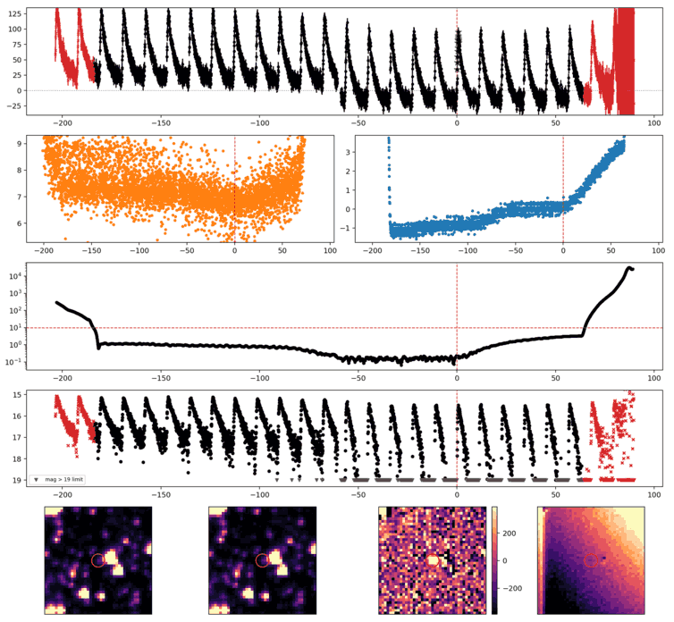
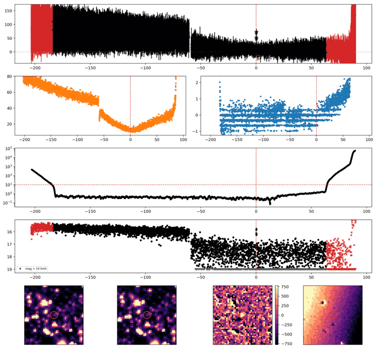
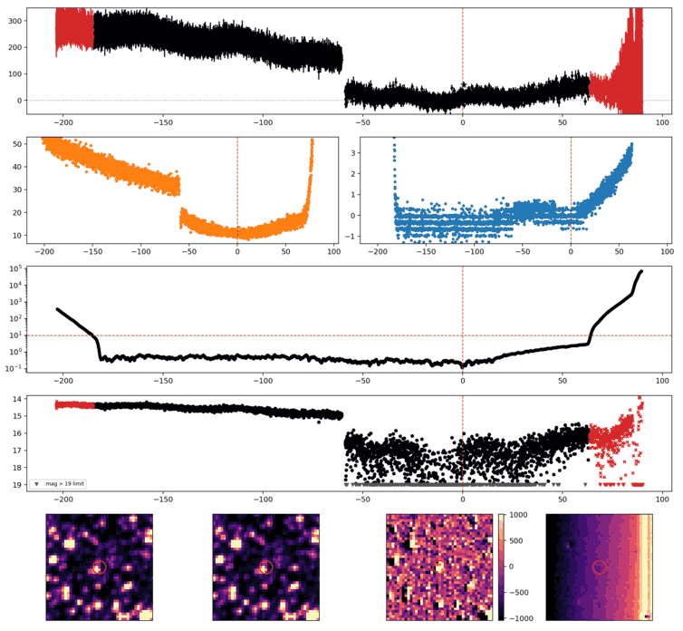
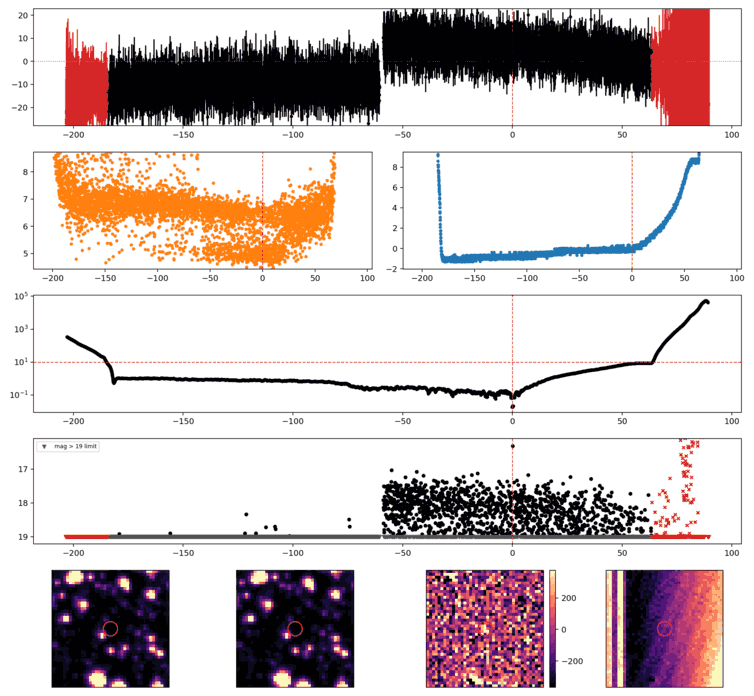
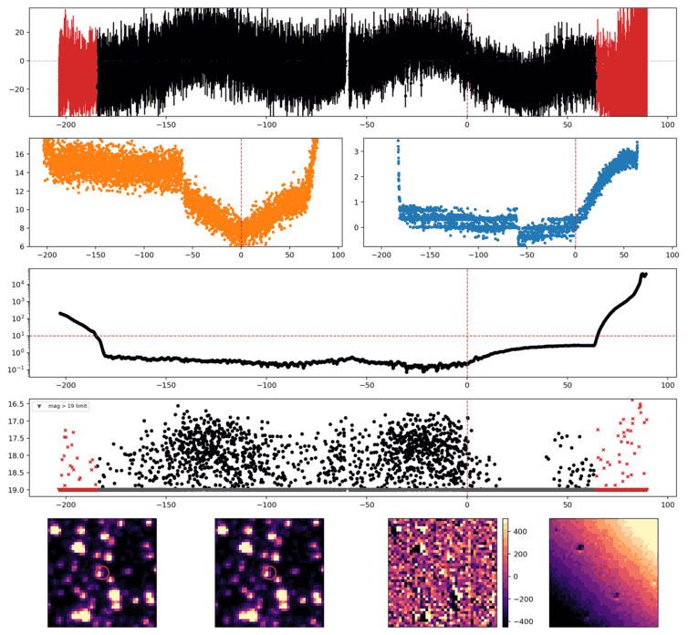
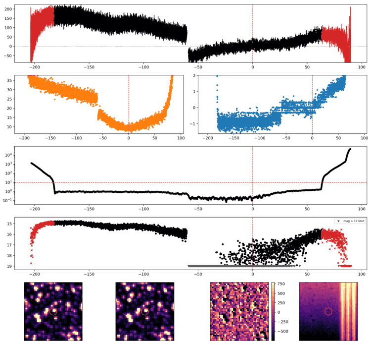

Search centered on refined position (195.1605097, -33.7976452 deg). Gaia coordinates are at J2016.0; proper motions are shown, without epoch propagation. A positional match does not change the candidate flags.
| Source ID / catalog entry | Separation (arcsec) | RA (deg) | Dec (deg) | G (mag) | BP (mag) | RP (mag) | Parallax ± error (mas) | PM RA* ± error (mas/yr) | PM Dec ± error (mas/yr) | RUWE | Variability |
|---|---|---|---|---|---|---|---|---|---|---|---|
| 6180135614534776320 | 3.342 | 195.1615094 | -33.7980595 | 15.843 | 16.097 | 15.377 | 0.081 ± 0.041 | 0.152 ± 0.040 | -2.821 ± 0.030 | 1.064 | VARIABLE |
Retrieved 2026-10-18T06:17:18.041297+00:00
Representative chosen by category, detection count, then Gaussian S/N. Original measurements and classifications are retained below.

Search centered on refined position (202.7221287, -58.7744991 deg). Gaia coordinates are at J2016.0; proper motions are shown, without epoch propagation. A positional match does not change the candidate flags.
| Source ID / catalog entry | Separation (arcsec) | RA (deg) | Dec (deg) | G (mag) | BP (mag) | RP (mag) | Parallax ± error (mas) | PM RA* ± error (mas/yr) | PM Dec ± error (mas/yr) | RUWE | Variability |
|---|---|---|---|---|---|---|---|---|---|---|---|
| 5870268705028158720 | 3.059 | 202.7218183 | -58.7753334 | 20.376 | 21.373 | 19.617 | 0.512 ± 0.616 | -5.612 ± 0.446 | -0.583 ± 0.499 | 1.049 | NOT_AVAILABLE |
| 5870268700687017216 | 4.451 | 202.7237517 | -58.7754050 | 18.876 | 19.928 | 17.836 | 0.381 ± 0.193 | -4.403 ± 0.129 | -0.762 ± 0.152 | 1.011 | NOT_AVAILABLE |
Retrieved 2026-10-18T06:17:21.555343+00:00

Search centered on refined position (206.0791651, -66.5246764 deg). Gaia coordinates are at J2016.0; proper motions are shown, without epoch propagation. A positional match does not change the candidate flags.
| Source ID / catalog entry | Separation (arcsec) | RA (deg) | Dec (deg) | G (mag) | BP (mag) | RP (mag) | Parallax ± error (mas) | PM RA* ± error (mas/yr) | PM Dec ± error (mas/yr) | RUWE | Variability |
|---|---|---|---|---|---|---|---|---|---|---|---|
| 5851520313798592384 | 1.297 | 206.0786631 | -66.5243767 | 19.325 | 20.135 | 18.548 | 0.903 ± 0.233 | -1.763 ± 0.186 | -0.240 ± 0.256 | 1.036 | NOT_AVAILABLE |
| 5851520313763400064 | 3.367 | 206.0800034 | -66.5255500 | 20.387 | 21.303 | 19.825 | -0.209 ± 0.556 | -5.716 ± 0.466 | -1.779 ± 0.669 | 1.001 | NOT_AVAILABLE |
| 5851520309463758592 | 3.603 | 206.0816317 | -66.5244862 | 18.844 | 19.591 | 18.087 | 0.455 ± 0.168 | -7.693 ± 0.128 | -3.146 ± 0.185 | 0.944 | NOT_AVAILABLE |
| 5851520309463758336 | 4.902 | 206.0791185 | -66.5233148 | 19.746 | 19.751 | 18.276 | -0.659 ± 0.585 | -14.001 ± 0.458 | -7.882 ± 0.629 | 1.481 | NOT_AVAILABLE |
Retrieved 2026-10-18T06:17:25.055858+00:00

Search centered on refined position (197.4870439, -38.4560903 deg). Gaia coordinates are at J2016.0; proper motions are shown, without epoch propagation. A positional match does not change the candidate flags.
No Gaia DR3 sources found within 5 arcseconds.
Retrieved 2026-10-18T06:17:29.471437+00:00

Search centered on refined position (224.5573583, -44.1258232 deg). Gaia coordinates are at J2016.0; proper motions are shown, without epoch propagation. A positional match does not change the candidate flags.
No Gaia DR3 sources found within 5 arcseconds.
Retrieved 2026-10-18T06:17:34.413926+00:00

Search centered on refined position (211.9554354, -55.2321144 deg). Gaia coordinates are at J2016.0; proper motions are shown, without epoch propagation. A positional match does not change the candidate flags.
No Gaia DR3 sources found within 5 arcseconds.
Retrieved 2026-10-18T06:17:37.853261+00:00